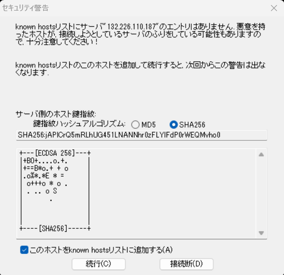

チュートリアル一覧に戻る : Oracle Cloud Infrastructure チュートリアル
この章では、作成済みの仮想クラウド・ネットワーク(VCN)の中にコンピュート・インスタンスを作成していきます。
所要時間 : 約20分
前提条件 :
- その2 - クラウドに仮想ネットワーク(VCN)を作る を通じて仮想クラウド・ネットワーク(VCN)の作成が完了していること
注意 : チュートリアル内の画面ショットについては Oracle Cloud Infrastructure の現在のコンソール画面と異なっている場合があります
目次：
参考動画：本チュートリアルの内容をベースとした定期ハンズオンWebinarの録画コンテンツです。操作の流れや解説を動画で確認したい方はご参照ください。
1. 新規仮想マシンインスタンスの作成
第2章で作成した仮想コンピュート・ネットワーク(VCN)に、新しくインスタンスを作成していきます。
今回はコンソールから、一番小さなシェイプ(1 OCPU)の仮想マシン(VM)タイプの Oracle Linux 7 のインスタンスを1つ作成します。
-
コンソールメニューから
コンピュート→インスタンスを選択し、インスタンスの作成ボタンを押します -
立ち上がった ”コンピュート・インスタンスの作成” ウィンドウに 以下の項目を入力し、
作成ボタンを押下します- 名前 - 作成するインスタンスの名前として、任意の値を設定します。 (画面は TestVM1 として入力しています)
- コンパートメントに作成 - デフォルトで現在のコンパートメントが選択されています。別のコンパートメントに作成したい場合はリストから選択します。

-
配置とハードウェアの構成
-
可用性ドメイン - 任意の可用性ドメインを選択できます。集合ハンズオン環境を利用している場合は、講師の指示に従って選択してください。
-
このインスタンスのフォルト・ドメインの選択 - チェックすると、任意のフォルト・ドメインを指定できます。集合ハンズオン環境を利用している場合は、講師の指示に従って選択してください。
-
イメージ -
イメージの変更をクリックし、Oracle Linux 7 の最新のイメージを選択 - シェイプ -
シェイプの変更をクリックし、以下のインスタンス・タイプ、シェイプ・シリーズ、シェイプを選択します。- インスタンス・タイプ - 仮想マシン
- シェイプ・タイプ - Intel Skylake
- シェイプ - VM.Standard2.1

-
-
ネットワーキングの構成
- ネットワーク - ”既存の仮想クラウド・ネットワーク” を選択
- [コンパートメント名] の仮想クラウド・ネットワーク - 第2章で作成した仮想クラウド・ネットワークを選択 (画面は TutorialVCN を選択しています)
- サブネット - ”既存のサブネット” を選択
- [コンパートメント名] のサブネット - 第2章で作成したパブリック・サブネットを選択 (画面は パブリック・サブネット-TutorialVCN を選択しています)
- ネットワーク・セキュリティ・グループを使用してトラフィックを制御 - チェックなし
- パブリックIPアドレス - ”パブリックIPv4アドレスの割当て” を選択
Note
2章でVCNウィザードで作成したVCNには、プライベート・サブネットとパブリック・サブネットがあります。本チュートリアルでは、このあとインターネット経由でssh接続を行うため、必ず パブリック・サブネットを選択 するようにしてください。

-
SSHキーの追加 - “SSHキー・ペアの生成” を選択し、
秘密キーの保存、公開キーの保存ボタンをそれぞれ押下します。秘密キー ”ssh-key-yyyy-MM-dd.key”、公開キー ”ssh-key-yyyy-MM-dd.key.pub” というファイルがそれぞれダウンロードされます。Note
SSHキーの取得漏れや、設定したキー・ペアを紛失した場合は、こちらのチュートリアル を参考にトラブルシュートを行うか、再作成を行う必要があります。
Note
ユーザーが作成したキー・ペアを登録することも可能です。その場合は、”公開キー・ファイルの選択” を選択し、「ここにファイルをドロップします選択されていません または場所を参照します。」から、ローカルPCにある生成済みのキー・ペアのうち公開鍵 を選択します。

-
ブート・ボリュームの構成
- カスタム・ブート・ボリューム・サイズを指定します - チェックなし
- 転送中暗号化の使用 - チェックなし
- 自分が管理するキーでこのボリュームを暗号化 - チェックなし

-
拡張オプションの表示
拡張オプションでは、任意で Cloud-initスクリプトの設定 や、モニタリングの有効/無効化 などが行えます。本チュートリアルでは、特に設定を変更しませんが、一部の項目について説明します。
-
ネットワーキング - プライベートIPアドレス - コンピュート・インスタンスのプライベートIPアドレスに任意の固定IPアドレスを指定したい場合、ここで指定することが出来ます。特に指定しない場合は、DHCPによりアドレス番号の小さい空きアドレスから順番に振られます
-
ネットワーキング - ホスト名 - インスタンスのホスト名を指定できます。
-

-
作成ボタン押下後、インスタンスの作成が開始され、ステータスが プロビジョニング中 になっていることを確認しますNote
Linux系インスタンスの作成には約1～2分程、Windows系インスタンスの作成には約5～6分程かかります
-
インスタンスの作成が完了すると、アイコンが黄色から緑色にかわり、ステータス表示が 実行中 に変わります。
2. 作成したインスタンス詳細情報の確認
作成したインスタンスの詳細情報を確認し、インスタンスに関する理解を深めます。
-
インスタンスの一覧画面から、TestVM1 リンクをクリックするか、右側の トリコロン から インスタンスの詳細の表示 を選択し、インスタンス詳細画面を開きます
-
上部の ”インスタンス情報” を確認します
”一般情報” や ”シェイプの詳細” にて、インスタンス作成時に入力した情報が表示されていることを確認します。
また、”プライマリVNIC” には、インスタンスにアタッチされた仮想ネットワーク・インタフェースの情報が表示されています。 初期状態では、指定したサブネットの中からプライベートIPアドレスがひとつアサインされ (画面では 10.0.0.2)、グローバルIPアドレスもひとつアサインされている (画面では 158.101.152.98) ことがわかります。 このグローバルIPアドレスは後ほどアクセスに使用しますので、手元にメモをしておいてください。
3. インスタンスへの接続
作成したインスタンスに対し、sshで接続をします。
-
任意のターミナルソフトを起動し、以下の情報でssh接続します。
-
IPアドレス - 先程のステップで確認したインスタンスの パブリックIPアドレス (上記例だと 158.101.152.98)
-
ポート - 22 (デフォルト)
-
ユーザー - opc (Oracleが作成した Oracle Linux インスタンスは、接続用に予め opc というユーザーが用意されています)
-
SSH鍵 - インスタンスを作成する際に使用した公開鍵と対になる秘密鍵
※集合ハンズオン・セミナーの場合は講師から指示される鍵を使用してください
-
パスフレーズ - 秘密鍵にパスフレーズを設定している場合は指定してください。
※集合ハンズオン・セミナーの場合は未設定です。
下記は Tera Term を利用した場合の接続の設定例です。

-
-
接続が成功すると、以下のように opc ユーザーでインスタンスにログインできます。 opc ユーザーは、sudo により root 権限を取得することが可能です。
OS上のファイアウォール・ルールの設定
Oracle提供イメージの場合、デフォルトでOS上のファイアウォール・ルールが設定されています。LinuxではSSHアクセスのみを許可するファイアウォール・ルールが存在します。
必要に応じて、利用するプロトコルの通信を許可するよう設定を行ってください。Oracle提供のLinuxイメージでのOSの設定については こちら を参考にしてください。
これで、この章の作業は完了です。